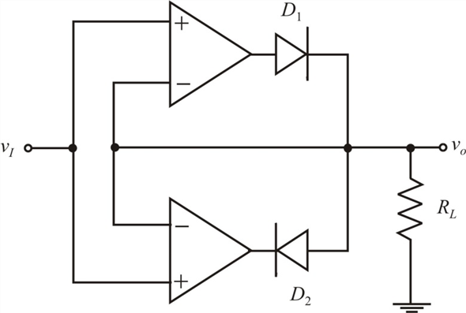
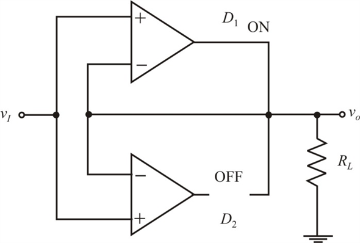
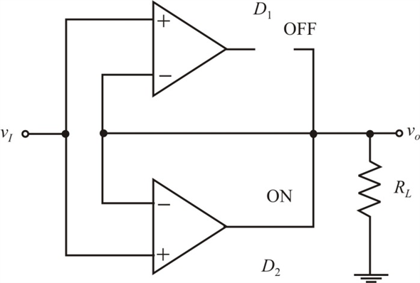
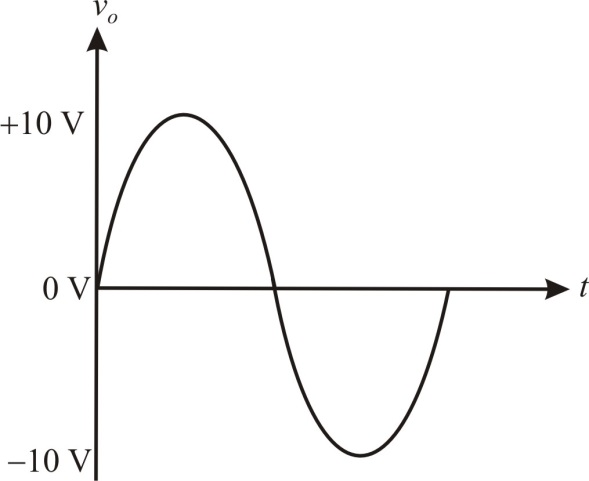

Step 1:
Refer to Figure 17.33 in the text book for the super diode precision half-wave rectifier circuit.
Two super diode circuits are connected to a common load resistor and have the same input signal with their diodes reversed. The cathode of one diode and the anode of the other diode are connected to the load as shown in the following circuit:

Figure 1
Step 2:
For  , that is, for the positive sine voltages, the diode
, that is, for the positive sine voltages, the diode  conducts and diode
conducts and diode  is cutoff because the op-amp outputs reach the positive saturation levels. Draw the circuit.
is cutoff because the op-amp outputs reach the positive saturation levels. Draw the circuit.

Figure 2
From the circuit observe that the output of the circuit follows input (neglect the diode voltage drop).
Therefore,
Step 3:
For  , that is, for the negative sine voltages, the diode
, that is, for the negative sine voltages, the diode  is cutoff and diode
is cutoff and diode  conducts because the op-amp outputs reach negative saturation levels. Draw the circuit.
conducts because the op-amp outputs reach negative saturation levels. Draw the circuit.

Figure 3
From the circuit observe that the output of the circuit follows the input (neglect the diode voltage drop).
Therefore,
Step 4:
Draw the output waveform, which is same as the input sine wave.

Figure 4
Thus, the output waveform is drawn.